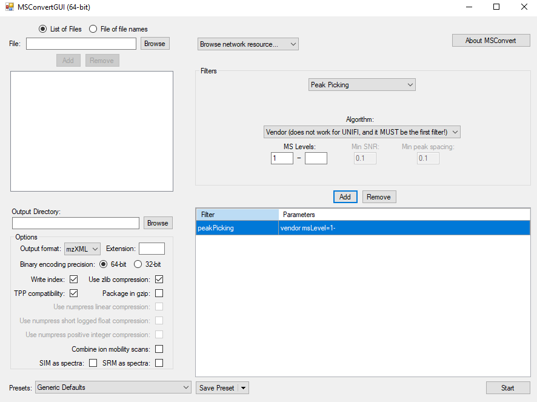
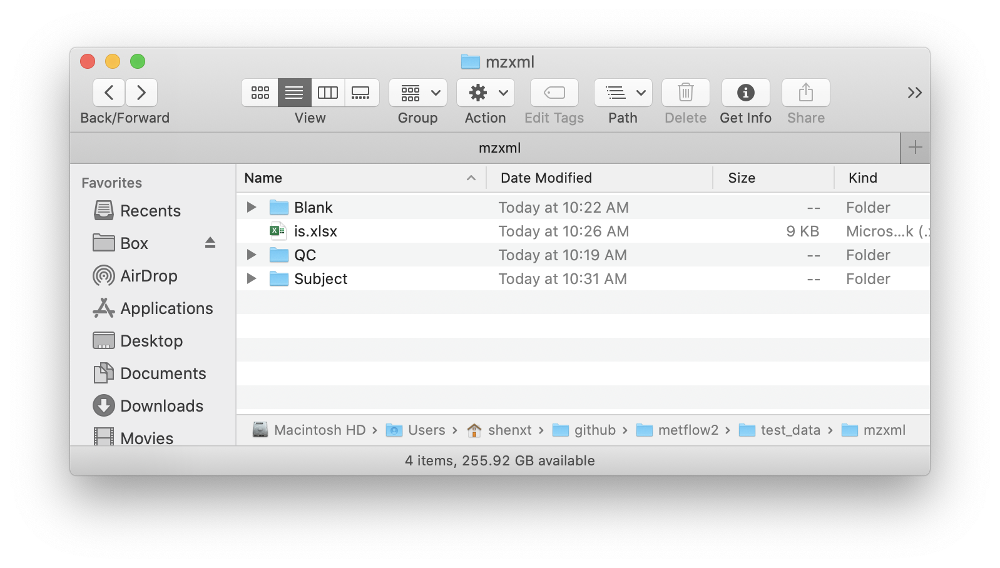

Raw MS data processing using metflow2
Xiaotao Shen (https://www.shenxt.info/)
true
Created on 2020-04-01 and updated on 2021-04-07
Source:vignettes/raw_data_processing.Rmd
raw_data_processing.RmdIntroduction
metflow2 can used to processed the raw MS data for peak detection and alignment, and generate a peak table for next analysis.
Data preparation
The MS raw data from Mass Spectrometry should be converted to mzXML format and then placed in different folders according to their class, for example Subject, QC, and Blank samples.
Here we use the demo data from demoData packages. So please install demoData package first.
devtools::install_github("jaspershen/demoData")You can convert raw MS data to mzXML format using ProteoWizard software. And the parameter setting is shown the below figure:

Data organization
All the mzXML format files should be placed in different folder according to sample type, such as QC, Subject, and Blank.

Run processData() function
We use the demo data from demoData to show how to process raw MS data using metflow2.
Load demo data
First we load the demo data from demoData package and then place them in a example folder.
##create a folder named as `example`
path <- file.path(".", "example")
dir.create(path = path, showWarnings = FALSE)
##get demo data
mzxml_data <- system.file("mzxml", package = "demoData")
file.copy(from = file.path(mzxml_data, "POS"),
to = path, overwrite = TRUE, recursive = TRUE)Now the demo mzXML data is in the ./example/POS folder. There are two folder in this directory, namely Subject and QC.
Data processing
Next, we use the process_data() function for peak detection and alignment.
new_path <- file.path(path, "POS")
setwd(path)
metflow2::process_data(
path = ".",
polarity = "positive",
ppm = 15,
peakwidth = c(5, 30),
snthresh = 5,
noise = 500,
threads = 6,
output.tic = TRUE,
output.bpc = TRUE,
output.rt.correction.plot = TRUE,
min.fraction = 0.5,
fill.peaks = FALSE,
is.table = "is.xlsx",
group.for.figure = "QC"
)Some important arguments:
ppm: Peak detection ppm. See thexcmspackage.peakwidth: Peak width. It is dependent on your column and LC system. See thexcmspackage.snthresh: Singal to noise threshold. See thexcmspackage.noise: Noise cutiff. See thexcmspackage.threads: The core number for performing.output.tic,output.bpc, andgroup.for.figure: Do you want to output the TIC or BPC of samples? Some times there are a lot of samples, so you can set thegroup.for.figureas the group name, for example, you can set it asQC.min.fraction: If one peak appears more thanmin.fractionsample in at least one group samples it will be kept.fill.peaks: Do you want to fill the missing values (NA)?is.table: If you add internal standards in your samples, you can provide the theis.tablein the folder which your mzXML format data in. It must bexlsxformat like the below figure shows:

Ohter parameters you can find here: processData().
Output results
After all done, all the results are placed in a new folder named as Result.
 *
* Peak_table.csv: is the peak table for next analysis.

-
Peak_table_for_cleaning.csv: Some non-useful columns is deleted from thePeak_table.csv, this can be directory used for next data cleaning.

intermediate_data: This is a folder which contains some intermediate data. If you want to re-run the data processing, please delete this folder first.feature_EIC: If you provide the internal standard table, the EICs of all the ISs will be placed in this folder.

From the EICs of the internal standards, you can access the quality of data.